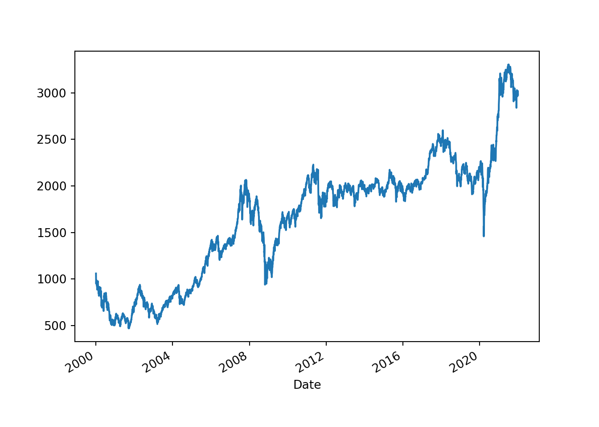
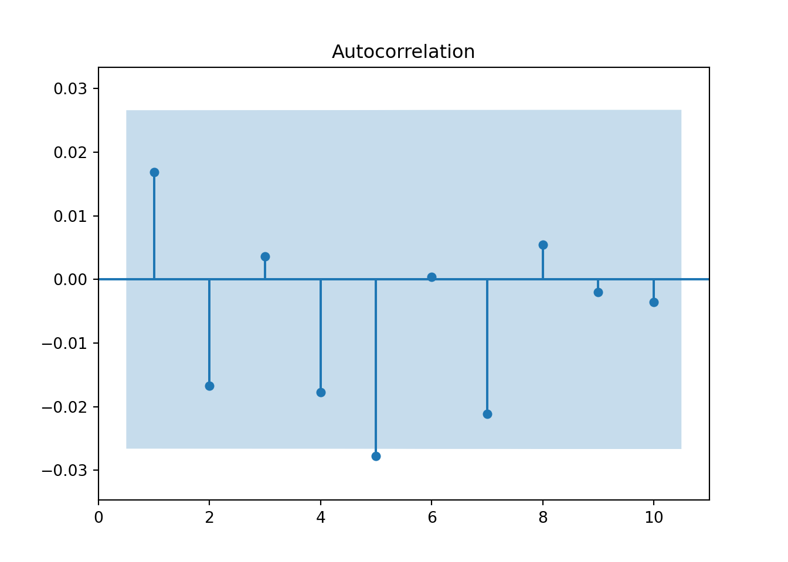
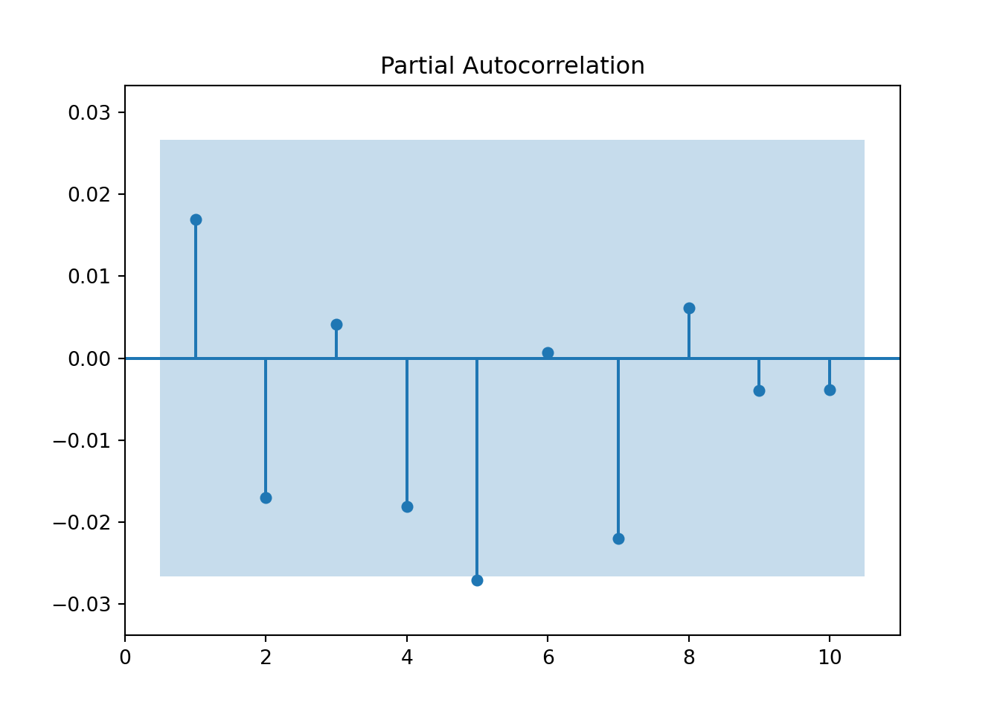
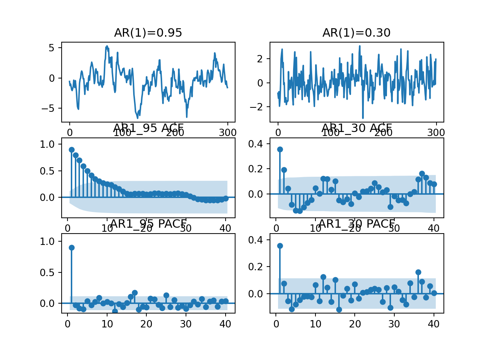
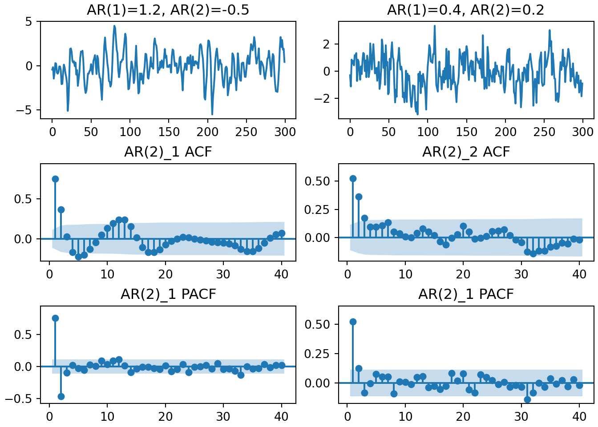
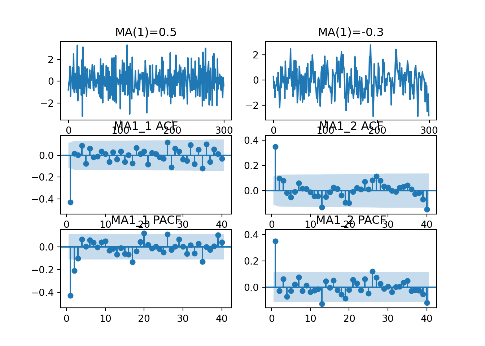
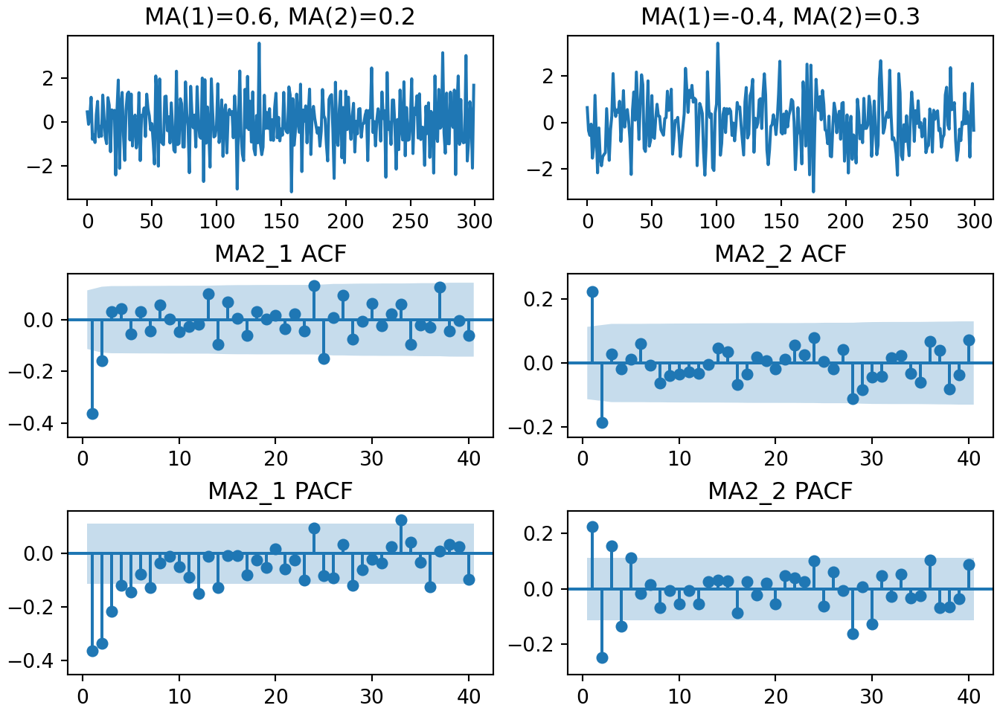

Chapter 2 제4장 안정적 시게열모형의 추정과 예측
2.1 시작에 앞서 python을 사용하기 위한 설정
다음은 python을 불러오기 위한 것입니다. 본인의 파이썬 경로를 넣으실 수도 있겠지만, 편의를 위하여 포함되어 있는 파일을 사용하시길 추천드립니다.
import pandas as pd
import numpy as np
import statsmodels as sm
import yfinance as yf
import matplotlib.pyplot as plt2.2 4.1 일반적인 시계열 분석 과정의 이해
단일 시계열로는 예측이 되지 않을 수 있다.
여러개의 시계열을 도입할 경우 서로 크기가 상이할 수 있으므로 각각 시계열의 표본평균을 제하고 이를 표본표준편차로 나누어 정규화하여 비교하는 것이 유용하다.
안정적 시계열이라는 것을 가정하자. 안정적 시계열이란 시간이 경과함에도 불구하고 평균이 일정하며 특정 시점에서 시계열의 값이 평균에서 벗어날 수는 있지만, 시간이 지남에 따라 평균으로 회귀하는 특성을 가진다.
안정적 시계열임을 어떻게 확인할 수 있을까? 단위근 검정 으로 확인이 가능하다.
2.3 4.2 기초 개념
2.3.1 4.2.1 확률과정
2.3.1.1 -
2.3.1.1.1 확률 변수 (random variable 또는 stochastic variable)
\(0 < Pr(x=r) < 1\) 을 만족하는 임의의 정수 r이 최소 하나가 존재하는 경우 \(x\)를 지칭한다
2.3.1.1.2 확률 과정 (stochastic process)
적절한 확률공간에서 정의되는 \(x\)를 t-시점마다 기록한 일련의 확률변수를 지칭하며 보통 \({x_t}\)로 표시한다. \(\{x_t\}^T_1 = (x_1, x_2, \cdots, x_T)\)를 확률변수의 모집단 \(\{x_t\}^\infty_{-\infty}\) 중 \(T\)개의 특정한 실현값(realization)이라고 하자.모든 실현 가능한 값들로 구성된 확률변수의 모집단을 확률과정의 ‘앙상블(ensemble)’ 이라고 부른다.
일반적으로 \(T\)개의 실현값으로 구성된 확률과정은 \(T\)-차원의 결합확률분포 \(F(x_1,x_2,\cdots,x_T)\) 로 기술할 수 있다. 결합확률분포의 모든 모멘트(평균, 분산 등)을 단 한 번의 실현값 x_t로 부터 추론하는 것은 불가능하기 때문에 확률과정을 이야기할 때는 보통 ‘안정성’(stationarity)이라는 가정을 도입하게 된다.
2.3.2 4.2.2 안정성, 자기공분산 및 자기 상관
2.3.2.1 -
2.3.2.1.1 (약)안정성
다음 조건을 만족하는 경우 시계열 \(x_t\)는 ‘약안정적’(weakly stationary 또는 covariance stationary)라고 한다.
\[ E(x_t)=\int^\infty_{-\infty}x_tf(x_t)dx_t = \mu < \infty \qquad \forall t \\ Var(x_t) = E(x_t=\mu)^2 = \int^\infty_{-\infty}(x_t-\mu)^2f(x_t)dx_t = \gamma_0 < \infty \qquad \forall t \\ Cov(x_t, x_{t-k}) = E(x_t-\mu)(x_{t-k}-\mu) = \gamma_k < \infty \qquad \forall t,k \]
단, \(f(x_t)\)는 확률변수 \(x_t\) 의 비조건부밀도함수를 나타낸다.
중요한 점은 일차 및 이차 모멘트들이 ‘시간 가변적이지 않은 유한한 상수’일 때 \(x_t\)를 안정적이라고 한다는 것입니다.
2.3.2.1.2 자기공분산 (autocovariance) [\(\gamma_k\)]
공분산(covariance)이 두 변수사이의 움직임을 측정하는데 반하여 \(k\)-시점 떨어진 자기자신의 과거값과의 움직임을 예측하는데 쓰인다. 관측치들 사이의 거리가 과거 \(k\)-시점이건, 미래로 \(k\)-시점이던 관계가 없기 때문에 \(\gamma_k = \gamma_{-k} = Cov(x_t, x_{t+k})\)이 성립한다.
‘표본자기공분산’(\(\hat{\gamma_k}\))은 다음과 같이 계산할 수 있다.
\[ \hat{\gamma_k} = (1/T)\Sigma^{T-k}_{t=1}(x_t - \bar{x})(x_{t+k} - \bar{x}) \]
2.3.2.1.3 자기상관계수 (autocorrelation) [\(\rho_k\)]
자기공분산값은 변수를 어떠한 단위로 측정하는가에 따라 크기가 달라지기 때문에 \(\gamma_k\)를 \(\gamma_0\), 즉 분산으로 나눈 ‘자기상관계수’ \(\rho_k\)를 계산한다.
\[ \rho_k = corr(x_t,x_{t-k}) = \frac{\gamma_k}{\gamma_0} \]
자기상관계수를 각각의 \(k\)에 대한 함수로 표시한 것을 ‘자기상관함수’(ACF)라고 하고 ‘correlogram’이라고도 부른다.
‘표본자기상관계수’(\(\hat{\rho_k}\))는 다음과 같이 계산한다.
\[ \hat{\rho_k} = \frac{\Sigma^T_{t=k+1}(x_t-\bar{x})(x_{t-k}-\bar{x})}{\Sigma^T_{t=1}(x_t-\bar{x})^2} \]
2.3.2.1.4 강안정성
확률과정의 특성이 기준시점의 변화에 영향을 전혀 받지 않는 경우 이 과정을 ‘강안정적’(strictly stationary 또는 strongly stationary)라고 한다. 다시 말하자면, 임의의 시간집합 \(t_1,t_2,\cdots,t_m\)에 대한 결합확률분포 \(F(t_1,t_2,\cdots,t_m)\)이 이를 읨의로 \(n\)-시점 이동한 \(t_1+n,t_2+n,\cdots,t_m+n\)에 대한 결합확률분포 \(F(t_1+n,t_2+n,\cdots,t_m+n)\)와 같은 경우이다. 즉,
\[ F(t_1,t_2,\cdots,t_m) = F(t_1+n,t_2+n,\cdots,t_m+n) \]
\(m=1\)일 경우 평균과 분산이 모두 상수임을 의미하며 \(m=2\)일 경우 공분산이 다치 시차 \(k\)의 함수일 뿐 시간 \(t\)에는 종속하지 않아야 한다.
\[ Cov(x_t, x_{t+k}) = Cov(x_T, x_{T+k}) \]
강안정적과정은 유한한 평균과 분산을 가질 필요가 없으므로 약안정성이 강안정성보다 더 엄격한 개념이 된다.
자기상관함수의 신뢰구간을 구하는 부분은 생략
2.3.2.2 예제) 안정적 시계열, 표본자기상관함수 및 유의성 검정
코스피 데이터를 바탕으로 분석을 진행하겠습니다. 데이터는 야후 파이넨스 라이브러리를 활용합니다.
kospi = yf.download("^KS11",start="2000-01-04", end="2021-12-31")##
[*********************100%***********************] 1 of 1 completedkospi["rtn"]=kospi["Adj Close"].pct_change() #수익률 추가
data = kospi["rtn"][1:] # 첫번째 열의 수익률은 nan이므로 제거 필요함.
print(kospi.columns)## Index(['Open', 'High', 'Low', 'Close', 'Adj Close', 'Volume', 'rtn'], dtype='object')kospi## Open High ... Volume rtn
## Date ...
## 2000-01-04 1028.329956 1066.180054 ... 195900 NaN
## 2000-01-05 1006.869995 1026.520020 ... 257700 -0.068675
## 2000-01-06 1013.950012 1014.900024 ... 203500 -0.025874
## 2000-01-07 949.169983 970.159973 ... 215700 -0.012635
## 2000-01-10 979.669983 994.940002 ... 240200 0.040679
## ... ... ... ... ... ...
## 2021-12-24 3009.479980 3025.770020 ... 537500 0.004756
## 2021-12-27 3013.939941 3017.310059 ... 475000 -0.004276
## 2021-12-28 3006.770020 3020.290039 ... 607000 0.006898
## 2021-12-29 3002.899902 3007.719971 ... 545800 -0.008923
## 2021-12-30 2999.750000 3005.360107 ... 460600 -0.005225
##
## [5428 rows x 7 columns]# 코스피 종가 그래프
plt.cla()
kospi["Adj Close"].plot.line()
plt.show()
# 코스피 일간 수익률 그래프
plt.cla()
kospi["rtn"].plot.line()
plt.show()
2.3.2.2.1 ACF 연산
nan을 제거하기 위해 첫번째 data를 제거하여야 합니다.
import statsmodels.api as sm
from statsmodels.tsa.stattools import acf
acf(data, nlags=5)## array([ 1. , 0.01690129, -0.01668116, 0.00358841, -0.01769711,
## -0.02776514])그래프
from statsmodels.graphics.tsaplots import plot_acf
plot_acf(data, lags=10, use_vlines=True, zero = False, auto_ylims=True)
# zero : 0차시 제거
# auto_ylims : 자동으로 y축 축적 제공됨.
plt.show()
2.3.2.2.2 PACF 연산
import statsmodels.api as sm
from statsmodels.tsa.stattools import pacf
pacf(data, nlags=5)## array([ 1. , 0.0169044 , -0.01697792, 0.00416667, -0.01813781,
## -0.0270649 ])그래프
from statsmodels.graphics.tsaplots import plot_pacf
plot_pacf(data, lags=10, use_vlines=True, zero = False, auto_ylims=True)
# zero : 0차시 제거
# auto_ylims : 자동으로 y축 축적 제공됨.
plt.show()
2.3.2.2.3 Box test
여러 개의 자기상관계수 값들을 동시에 0인가 하는 귀무가설을 검정하기 위해서는 Q-통계량을 사용한다. Box-Pierce(1970) Q-통계량은 표본상관계수 제곱의 합을 이용하며 이 통계량을 소표본에서도 유용하도록 교정한 Liung-Box(1978)의 수정 Q-통계량은 다음과 같다.
\[ Q = T(T+2)\Sigma^q_{j=1}\hat{\rho^2_j}/(T-j) \sim \chi^2(q) \]
검정통계량의 분포는 귀무가설하에서 유도한다. Ljung-Box Q-통계량의 귀무가설은 “\(q\)개의 \(\hat{\rho_j}\)이 동시에 0이다.” 이므로 표본으로부터 구한 Q-통계량이 자유도 q를 갖는 \(\chi^2\)-분포의 이론적 임계값보다 크다면 이들 중 최소한 하나의 값이 주어진 유의수준하에서 통계적으로 0과 다르다는 것으로 해석한다.
\(H_0\) : The data are independently distributed
\(H_1\) : The data are not independently distributed; they exhibit serial correlation.
Liung-Box(1978)
sm.stats.diagnostic.acorr_ljungbox(data, lags=[10])## lb_stat lb_pvalue
## 10 11.708956 0.305007sm.stats.diagnostic.acorr_ljungbox(data, lags=10)## lb_stat lb_pvalue
## 1 1.551099 0.212973
## 2 3.062335 0.216283
## 3 3.132281 0.371676
## 4 4.833831 0.304776
## 5 9.022923 0.108153
## 6 9.023727 0.172248
## 7 11.455119 0.119962
## 8 11.617499 0.169103
## 9 11.638545 0.234462
## 10 11.708956 0.305007Box-Pierce(1970)
sm.stats.diagnostic.acorr_ljungbox(data, lags=[10], boxpierce=True)## lb_stat lb_pvalue bp_stat bp_pvalue
## 10 11.708956 0.305007 11.69511 0.305982.3.3 4.2.3 편자기상관
2.3.3.1 -
편자기상관(partial autocorrelation)을 설명하기 위해 다음과 같은 AR(1)과정을 생각해 보자
\[ x_t = \phi_1x_{t-1}+\alpha_t,\quad \alpha_t \sim NID(0,\sigma^2) \]
이 식은 언뜻 보기에는 1시점 떨어진 두 관측치 \(x_t\)와 \(x_{t-1}\)만의 관계를 나타내는 것처럼 보이지만 후에 보는 것처럼 \(x_t\)와 \(x_{t-2}\)사이에도 일정한 상관관계를 갖게 된다. 따라서 예를 들어 AR(1) 과정을 따르는 \(x_t\)의 \(\rho_3 = corr(x_t,x_{t-3})\)을 구해보면 영이 아닌 값을 가질 수 있다. 문제에 답하기 위하여 일반적으로 두 관측치 \(x_t\)와 \(x_{t+k}\) 사이의 직접적인 상관관계를 이야기 하는 외에도 \(x_{t+1},x_{t+2},\cdots,\) 그리고 \(x_{t+k-1}\)의 상관관계를 계산해 볼 필요가 있게 된다. 즉, 다음과 같은 조건부 상관관계를 생각할 수 있다.
\[ Corr(x_t,x_{t+k}|x_{t+1},\cdots,x_{t+k-1}) \]
이를 ‘편자기상관’(partial autocorrelation; PAC)이라고 한다. \(x_t\)와 \(x_{t+k}\) 사이의 편자기상관계수는 \((x_t-\hat{x}_t)\)와 \((x_{t+k}-\hat{x}_{t+k})\)사이의 일반자기상관계수로 정의한다. 즉, \(x_t\)와 \(x_{t+k}\) 사이의 편자기상관계수를 \(\phi_{kk}\)라고 표시할때 이는 다음과 같이 정의된다.
\[ \phi_{kk} = \frac{Cov[(x_t-\hat{x}_t),(x_{t+k}-\hat{x}_{t+k})]}{\sqrt{Var(x_t-\hat{x}_t)}\sqrt{Var(x_{t+k}-\hat{x}_{t+k})}} \]
실제로 위의 식을 이해하거나 이 공식으로 편자기상관게수를 구하는 것은 쉽지 않을 것이다. 보다 직관적인 설명은 \(\phi_{kk}\)는 다음과 같은 회귀식 (AR(\(k\))모형)에서 \(k\)-번째 회귀계수와 같은 것으로 알려져 있다.
\[ x_{t+k}=\phi_{k1}x_{t+k-1}+\phi_{k2}x_{t+k-2}+\cdots+\phi_{kk}x_{t}+a_{t+k} \]
단 \(\phi_{ki}\)는 AR(\(k\))모형의 \(i\)-번째 회귀계수를 나타낸다. \(a_{t+k}\)는 정규분포하는 오차항으로 \(j\ge1\)에 대하여 \(x_{t+k-j}\)와 비상관이다.
추정하는 방법으로, ‘율-워커(Yule-Walker) 방정식’을 사용할 수 있다. AR(\(k\))모형 식에서 양변에 \(x_{t+k-j}\)를 곱하고 기대값을 취하면 다음 식을 얻는다
\[ \gamma_j=\phi_{k1}\gamma_{j-1}+\phi_{k2}\gamma_{j-2}+\cdots+\phi_{kk}\gamma_{j-k} \]
양변을 다시 \(x_i\)과정의 분산 \(\gamma_0\)로 나누면
\[ \rho_j=\phi_{k1}\rho_{j-1}+\phi_{k2}\rho_{j-2}+\cdots+\phi_{kk}\rho_{j-k} \]
와 같은 방적식 체계를 얻을 수 있으며 이를 율 워커 방정식이라고 부른다. 이를 크레이머 공식을 통해 \(\phi_{kk}\)를 구할 수 있다.
표본편자기상관함수 \(\hat{\phi}_{kk}\)는 \(\rho_j\) 대신 \(\hat{\rho_j}\)를 사용하여 계산한다. \(\rho_j\) 대신 \(\hat{\rho_j}\)를 사용하는 경우에도 율 -워커 방정식으로부터 구한 \(\hat{\phi}\)들은 최우추정량과 동일한 점근분포를 갖는 것으로 알려져 있다. 확률과정이 AR(\(p\))를 따를 때 \(\hat{\phi}_{kk}\)의 표준편차는 귀무가설에 관계업이 다음과 같이 근사할 수 있다.(Quenouille(1949))
\[ SE(\hat{\phi}_{kk}) \simeq 1/\sqrt{T} \]
그러므로 \(\hat{\phi}_{kk}\pm 2/\sqrt{T}\)는 \(\hat{\phi}_{kk}\)의 2표준편차 신뢰구간이 된다.
2.3.3.2 예제) 표본편자기상관함수(자기상관함수와 편자기상관함수)
2.3.3.2.1 ACF 연산
nan을 제거하기 위해 첫번째 data를 제거하여야 합니다.
import statsmodels.api as sm
from statsmodels.tsa.stattools import acf
acf(data, nlags=5)## array([ 1. , 0.01690129, -0.01668116, 0.00358841, -0.01769711,
## -0.02776514])그래프
from statsmodels.graphics.tsaplots import plot_acf
plot_acf(data, lags=10, use_vlines=True, zero = False, auto_ylims=True)
# zero : 0차시 제거
# auto_ylims : 자동으로 y축 축적 제공됨.
plt.show()
2.3.3.2.2 PACF 연산
import statsmodels.api as sm
from statsmodels.tsa.stattools import pacf
pacf(data, nlags=5)## array([ 1. , 0.0169044 , -0.01697792, 0.00416667, -0.01813781,
## -0.0270649 ])그래프
from statsmodels.graphics.tsaplots import plot_pacf
plot_pacf(data, lags=10, use_vlines=True, zero = False, auto_ylims=True)
# zero : 0차시 제거
# auto_ylims : 자동으로 y축 축적 제공됨.
plt.show()
2.3.4 4.2.4 월드분해정리와 선형필터
2.3.4.1 -
2.3.4.1.1 백색잡음과정(white-noise process)
\(a_t\)를 다음과 같은 평균과 (공)분산을 갖는 분포로부터의 일련의 비상관 확률변수라고 하자.
\[ E(a_t)=0 \\ Var(a_t)=\sigma^2_a \\ Cov(a_t,a_{t-k})=0, \qquad \forall k \neq0 \]
이러한 일련의 과정은 현시점까지의 자료가 미래에 대한 예측정보를 전혀 포함하고 있지 않다는 의미에서 백색잡음과정(white-noise process)라고 부른다.
2.3.4.1.2 월드분해정리 (Wold’s decomposition theorem)
모든 약안정적이고 비결정적인 ‘확률과정’\(x_t-\mu\)는 일련의 무상관 확률변수의 선형결합으로 표현할 수 있다.
이 때의 선형결합을 ‘선형필터’(linear filter)라고 하며 비결정적인 부분을 나타내는 비조건부 평균 \(\mu\)를 생략하는 경우 (즉, 0이라는 상수값을 가정한 것과 동일) 월드분해정리의 함의는 일반적인 선형확률과정 \(x_t\)를 ‘선형필터표현식’(linear filter representaion)으로 나타낼 수 있다는 것이다.
2.4 4.3 자기회귀모형
2.4.1 -
일반적인 ’p-차 자기회귀모형’은 다음과 같이 쓸 수 있으며 기호로 AR(p)라고 표시한다.
\[ x_t=\phi_1x_{t-1}+\phi_2x_{t-2}+\cdots+\phi_px_{t-p}+a_t\\ 또는\\ (1-\phi_1L-\phi_2L^2-\cdots-\phi_pL^p)=a_t\\ \phi(L)x_t=a_t \]
확률과정 x_t가 안정적이기 위해서는 래그다항식 \(\phi(L)\)의 행렬식(determinant)을 0으로 두었을 때 이의 모든 근(또는 해)이 ‘복소수 단위원’의 ’밖에’ 존재하여야 한다. 즉,
\[ 1-\phi_1z-\phi_2z^2-\cdots-\phi_pz^p=0 \]
에서 z의 모든 근(차수 p개만큼 존재할 것으로 기대)이 복소수 단위원(complex unit circle)의 밖에(outside) 존재하여야 한다.
안정성 조건을 달리 표현하는 방법도 있다. AR(\(p\))모형을 따르는 시계열 \(x_t\)의 자기상관함수는 후술하는 것 처럼 \(p\)-차 차분방정식의 형태를 가지므로 이의 특성방정식(characteristic equation)의 일반해는 다음과 같다.
\[ \rho_k = c_1\lambda_1^k + c_2\lambda_2^k + \cdots + c_p\lambda_p^k \quad for \quad k\ge0 \]
단, \(\lambda_i\)는 \(z^p-\phi_1z^{p-1}-\cdots-\phi_p=0\) 방정식의 해이다. 이 경우 차분 방정식이론에 따르면 \(x_t\)의 안정성 조건은 \(\lambda\)가 모두 복소수 단위원의 안(inside)에 존재하는 것이다.
2.4.1.1 예시 (안정성 조건 확인)
AR(2)모형으로 설정하고 추정하였다고 하자.
import statsmodels.api as sm
from statsmodels.tsa.ar_model import AutoReg
res = AutoReg(data, lags = 2).fit()## C:\Users\user\Desktop\FINTIM~1\python\lib\site-packages\statsmodels\tsa\base\tsa_model.py:471: ValueWarning: A date index has been provided, but it has no associated frequency information and so will be ignored when e.g. forecasting.
## self._init_dates(dates, freq)print(res.summary())## AutoReg Model Results
## ==============================================================================
## Dep. Variable: rtn No. Observations: 5427
## Model: AutoReg(2) Log Likelihood 15203.551
## Method: Conditional MLE S.D. of innovations 0.015
## Date: 금, 29 7 2022 AIC -30399.103
## Time: 06:08:36 BIC -30372.708
## Sample: 2 HQIC -30389.890
## 5427
## ==============================================================================
## coef std err z P>|z| [0.025 0.975]
## ------------------------------------------------------------------------------
## const 0.0003 0.000 1.590 0.112 -7.38e-05 0.001
## rtn.L1 0.0157 0.014 1.158 0.247 -0.011 0.042
## rtn.L2 -0.0169 0.014 -1.251 0.211 -0.043 0.010
## Roots
## =============================================================================
## Real Imaginary Modulus Frequency
## -----------------------------------------------------------------------------
## AR.1 0.4636 -7.6674j 7.6814 -0.2404
## AR.2 0.4636 +7.6674j 7.6814 0.2404
## -----------------------------------------------------------------------------print(res.diagnostic_summary())## Test of No Serial Correlation
## ===========================================
## Lag Ljung-Box LB P-value DF
## -------------------------------------------
## 1 2.103 0.147 1
## 2 6.859 0.032 2
## 3 6.861 0.076 3
## 4 9.329 0.053 4
## 5 9.670 0.085 5
## 6 9.746 0.136 6
## 7 9.930 0.193 7
##
##
## Test of Normality
## ============================================
## Jarque-Bera P-value Skewness Kurtosis
## --------------------------------------------
## 10196.802 0.000 -0.364 9.677
##
##
## Test of Conditional Homoskedasticity
## ===========================================
## Lag ARCH-LM P-value DF
## -------------------------------------------
## 1 285.053 0.000 1
## 2 504.296 0.000 2
## 3 533.704 0.000 3
## 4 684.522 0.000 4
## 5 782.091 0.000 5
## 6 808.062 0.000 6
## 7 807.901 0.000 7
## 8 813.591 0.000 8
## 9 823.510 0.000 9
## 10 859.046 0.000 10
## -------------------------------------------print("AR Roots : ", res.roots)## AR Roots : [0.46357281-7.66742076j 0.46357281+7.66742076j]다음은 AR[0,0,0,0,5]를 추정한 결과이다.
import statsmodels.api as sm
from statsmodels.tsa.ar_model import AutoReg
res2 = AutoReg(data, lags = [5]).fit()## C:\Users\user\Desktop\FINTIM~1\python\lib\site-packages\statsmodels\tsa\base\tsa_model.py:471: ValueWarning: A date index has been provided, but it has no associated frequency information and so will be ignored when e.g. forecasting.
## self._init_dates(dates, freq)print(res2.summary())## AutoReg Model Results
## ==============================================================================
## Dep. Variable: rtn No. Observations: 5427
## Model: Restr. AutoReg(5) Log Likelihood 15198.582
## Method: Conditional MLE S.D. of innovations 0.015
## Date: 금, 29 7 2022 AIC -30391.164
## Time: 06:08:37 BIC -30371.369
## Sample: 5 HQIC -30384.255
## 5427
## ==============================================================================
## coef std err z P>|z| [0.025 0.975]
## ------------------------------------------------------------------------------
## const 0.0003 0.000 1.612 0.107 -6.93e-05 0.001
## rtn.L5 -0.0278 0.014 -2.052 0.040 -0.054 -0.001
## Roots
## =============================================================================
## Real Imaginary Modulus Frequency
## -----------------------------------------------------------------------------
## AR.1 -2.0478 -0.0000j 2.0478 -0.5000
## AR.2 -0.6328 -1.9476j 2.0478 -0.3000
## AR.3 -0.6328 +1.9476j 2.0478 0.3000
## AR.4 1.6567 -1.2037j 2.0478 -0.1000
## AR.5 1.6567 +1.2037j 2.0478 0.1000
## -----------------------------------------------------------------------------print(res2.diagnostic_summary())## Test of No Serial Correlation
## ===========================================
## Lag Ljung-Box LB P-value DF
## -------------------------------------------
## 1 2.847 0.092 1
## 2 4.638 0.098 2
## 3 4.698 0.195 3
## 4 4.698 0.320 4
## 5 6.853 0.232 5
## 6 7.133 0.309 6
## 7 7.160 0.412 7
## 8 7.508 0.483 8
##
##
## Test of Normality
## ============================================
## Jarque-Bera P-value Skewness Kurtosis
## --------------------------------------------
## 10140.655 0.000 -0.387 9.655
##
##
## Test of Conditional Homoskedasticity
## ===========================================
## Lag ARCH-LM P-value DF
## -------------------------------------------
## 1 286.833 0.000 1
## 2 513.782 0.000 2
## 3 541.687 0.000 3
## 4 697.659 0.000 4
## 5 793.518 0.000 5
## 6 817.815 0.000 6
## 7 818.163 0.000 7
## 8 823.956 0.000 8
## 9 832.184 0.000 9
## 10 864.609 0.000 10
## -------------------------------------------print("AR Roots \n===========================================\n ", res2.roots)## AR Roots
## ===========================================
## [-2.04778776-0.j -0.63280122-1.94756189j -0.63280122+1.94756189j
## 1.6566951 -1.20365944j 1.6566951 +1.20365944j]2.4.2 4.3.1 AR(1) 모형
2.4.2.1 -
자기회귀모형의 특성을 이의 가장 간단한 형태인 AR(1) 모형을 사용하여 살펴보자.
\[ x_t = \phi x_{t-1} + a_t \\ 또는\\ (1-\phi L)x_t = \phi(L)x_t = a_t \]
\(x_t\)가 안정적 과정인 경우 식을 다음과 같이 변형할 수 있을 것이다.
\[ x_t = (1-\phi L)^{-1}a_t\\ =(1+\phi L + \phi ^2L^2+\cdots)a_t\\ =a_t + \phi a_{t-1}+ \phi ^2 a_{t-2}+ \phi^3 a_{t-3} + \cdots \]
안정적 과정에서 \(E(x^2_t)=E(x^2_{t-k})=\sigma^2_x=\gamma_0\)가 성립하므로
\[ E(x_t)=0 \quad \forall t\\ Var(x_t)=E[(x_t-E(x_t))^2]=\sigma^2+\phi^2 \sigma^2 + \phi^4 \sigma^2 + \cdots\\ =\frac{1}{1-\phi^2}\sigma^2 \]
식은 \(x_t\)의 비조건부평균, 즉 장기평균값이 영임을 보여주고 있다. 만일 AR(1)과정을 보다 일반적으로
\[ x_t - \mu = \phi(x_{t-1}-\mu)+a_t \]
와 같이 평균으로부터의 이탈부분이 자기회귀하는 것으로 설정하였다면, \(E(x_t) = 1/(1-\phi L) = 1/(1-\phi)\)가 된다. 두 번째 등호가 성립하는 이유는 상수에 래그를 취해도 상수이기 때문이다. (즉, \(cL=L\))
\(Var(x_t)=\sigma^2/(1-\phi^2)\)에서 AR(1)과정의 비조건부분산, 즉 장기분산값을 나타내는데 \(|\phi|<1\)로 인한 확률과정 \(x_t\)의 분산 \(Var(x_t)\)는 백색잡음의 분산 \(\sigma^2\)보다 큼을 알 수 있다. 잔차항의 변동폭이 실제값의 변동폭보다 작은 것이 바로 이 이유에서 비롯함을 알 수 있다.
AR(1)과정의 공분산(covariance)의 특성을 살펴보자.
\[ \gamma_k = E[(x_t-E(x_t))(x_{t-k}-E(x_{t-k}))]\\ =E[(\phi^k x_{t-k}+\Sigma^{k-1}_{j=0}\phi^j a_{t-j})x_{t-k}]\\ =\phi^k \gamma_0 \quad (\because x_{t-k}=\Sigma^{\infty}_{j=0}\phi^j a_{t-k-j})\\ =\phi(\phi^{k-1}\gamma_0)=\phi \gamma_{k-1} \]
그러므로 AR(1)모형은 공분산과정 방적식과 자료생성모형이 서로 같다는 특성이 있다.그리고 \(|\phi|<1\)가 만족하면 ‘안정성조건’을 만족한다고 한다.
2.4.2.1.1 AR(1)모형의 안정성 조건
앞에서 설명한 안정성 조건을 AR(1)모형에 적용하여 보면 \(\phi(L)=1-\phi L\)이므로 안정성을 위해서는 \(|\phi(L)|=0\)의 근이 단위원 밖에 존재하여야 한다. 즉,
\[ |1-\phi z| = 0 \quad or \quad |z|=1/|\phi| \]
그러므로 안정성 조건 \(|z|>1\)은 \(|\phi|<1\)을 의미한다. 만일 근이 경계선상인 1이면 안정성 조건을 만족하지 않으며 이는 “확률보행과정”(random walk process)라고 할 수 있을 것이다. 이 경우 분산이 발산한다.
2.4.2.1.2 AR(1)모형의 자기상관함수(ACF)
AR(1)모형의 자기상관함수는 다음과 같이 계산한다.
\[ \rho_k = \gamma_k/\gamma_0 = \phi^k \]
그러므로 안정성 조건을 만족하면서 \(phi>0\)이면 ACF는 \(k\)가 증가함에 따라 지수적으로 0에 가까워지고 만일 \(\phi<0\)이면 ACF는 진동하는(oscillatory)형태로 0에 접근한다. 두 경우 모두 \(\phi\)가 비정상과정이 되는 한계값 \(\pm1\)에 가까운 경우 감소하는 속도는 매우 느리게 된다. 표본 ACF \(\hat{\rho}_k\)의 표준편차는 다음과 같다.
\[ SD(\hat{\rho}_k) \simeq \sqrt{(\frac{1}{T})(1+2\hat{\rho}^2_1+\cdots+2\hat{\rho}^2_{k-1})} \]
2.4.2.2 예제) AR(1)과정 : 시뮬레이션
다음은 두 개의 AR(1)과정의 시뮬레이션이다. AR1_95와 AR1_30은 각각 \(\phi = 0.95, \phi = 0.3\)을 가정한 것이고 두 계열 모두 비조건부평균을 0으로 가정하였다.
from statsmodels.tsa.arima_process import ArmaProcess
plt.cla()
fig, ax = plt.subplots(3,2)
# ar1_95 phi = 0.95
plt.subplot(3, 2, 1)
ar1_95_ar_parm = np.array([1, -0.95]) # 0.95를 넣기 위해서는 음수로 넣어야 하며, 1은 lag 0에서를 의미함.
ar1_95_ma_parm = np.array([1])
AR1_95 = ArmaProcess(ar1_95_ar_parm, ar1_95_ma_parm).generate_sample(nsample=300)
plt.plot(AR1_95)
plt.title('AR(1)=0.95')
# ar1_30 phi = 0.3
plt.subplot(3, 2, 2)
ar1_30_ar_parm = np.array([1, -0.3])
ar1_30_ma_parm = np.array([1])
AR1_30 = ArmaProcess(ar1_30_ar_parm, ar1_30_ma_parm).generate_sample(nsample=300)
plt.plot(AR1_30)
plt.title('AR(1)=0.30')
#ar1_95 acf
plot_acf(AR1_95, lags=40, use_vlines=True, zero = False, auto_ylims=True, ax=ax[1,0], title ='AR1_95 ACF')
#ar1_30 acf
plot_acf(AR1_30, lags=40, use_vlines=True, zero = False, auto_ylims=True, ax=ax[1,1], title ='AR1_30 ACF')
#ar1_95 pacf
plot_pacf(AR1_95, lags=40, use_vlines=True, zero = False, auto_ylims=True, ax=ax[2,0], title ='AR1_95 PACF')
#ar1_30 pacf
plot_pacf(AR1_30, lags=40, use_vlines=True, zero = False, auto_ylims=True, ax=ax[2,1],title ='AR1_30 PACF' )
plt.show()
두 계열의 표본 ACF를 보면, AR(1)과정임에도 불구하고 두 계열 모두 래그 2 이상에서도 자기상관을 가지고 있음을 확인할 수 있다(?).
어떤 임의의 자료가 있을 때 이의 Sample ACF, Sample PACF가 위의 그림과 유사하다고 하자. 즉, 표본 ACF값이 상대적으로 부드럽게 감소하고(‘taper-off’), 표본 PACF 값은 래그 1 이후에도 0으로 갑자기 줄어드는 경우(‘cut-off after lag 1’)이다. 이 경우 우리는 임의의 자료가 AR(1)과정에서 생성된 것이라고 추측할 수 있으며, 이 자료를 AR(1)모형으로 표현하여 모형을 추정하게 되는 것이다.
2.4.3 4.3.2 AR(2) 모형
2.4.3.1 -
AR(2)모형은 다음과 같다.
\[ x_t-\mu = \phi_1(x_{t-1} - \mu) + \phi_2(x_{t-2}-\mu)+a_t \]
또는 래그연산자 \(L\)을 사용하여 다음과 같이도 쓸 수 있다. 단, 이후 식들에서는 편의를 위해 \(\mu=0\)을 가정한다.
\[ (1-\phi_1L-\phi_2L^2)(x_t-\mu)=\phi(L)x_t = a_t \]
AR(1)과정과 동일한 방법으로 안정성 조건을 확인한다면, 다음과 같다.
\[ \phi_1 + \phi_2 < 1\\ -\phi_1+ \phi_2 < 1\\ -1<\phi_2<1 \]
AR(2)모형의 자기공분산을 계산하여보자.
\[ E(x_t,x_{t-k}) = \phi_1E(x_{t-1}x_{t-k})+\phi_1E(x_{t-2}x_{t-k})+E(a_tx_{t-k})\\ \gamma_k-\phi_1\gamma_{k-1}-\phi_2\gamma_{k-2}=E(a_tx_{t-k})\\ \quad \\ \gamma_0-\phi_1\gamma_1-\phi_2\gamma_2 = E(a_tx_{t-k}) = \sigma^2_a\\ \gamma_k-\phi_1\gamma_{k-1}-\phi_2\gamma_{k-2} = E(a_tx_{t-k}) = 0, \quad k = 1,2,\cdots \]
따라서 AR(1)모형의 경우와 유사하게 AR(2)과정의 자기공분산 방정식 또한 자료생성과정과 같은 형태를 가짐을 알 수 있다.
2.4.3.1.1 AR(2)모형의 자기상관함수(ACF)
자기상관계수 방정식 또한 자기공분산 방정식과 같이 AR(2)자료 생성 과정과 같다.
\[ \gamma_k-\phi_1\gamma_{k-1}-\phi_2\gamma_{k-2} = 0 \\ (\gamma_k-\phi_1\gamma_{k-1}-\phi_2\gamma_{k-2})/\gamma_0 = 0/\gamma_0 \\ \rho_k-\phi_1\rho_{k-1}-\phi_2\rho_{k-2} = 0, \quad k=1,2,\cdots \\ \quad\\ \quad\\ \rho_1=\phi_1/(1-\phi_2) \\ \rho_2=\frac{\phi^2_1}{(1-\phi_2)}+\phi_2=\frac{\phi^2_1+\phi_2-\phi^2_2}{1-\phi_2}\\ (\because \rho*k=*\rho{-k}) \]
이때 \(\gamma_0(1-\phi_1\rho_1-\phi_2\rho_2)=\sigma^2_2\)이므로 위에서 구한 \(\rho_1\)와 \(\rho_2\)를 대입하면 AR(2)과정을 따르는 \(x_t\)의 분산\(\sigma^2_x=\gamma_0\)는 다음과 같다.
\[ \gamma_0 = \sigma^2_x = (\frac{1-\phi_2}{1+\phi_2}) \cdot (\frac{\sigma^2_a}{(\phi_1+\phi_2-1)(\phi_2-\phi_1-1)}) \]
2.4.3.1.2 AR(2)모형의 편자기상환상관함수(Partial ACF)
AR(2)과정의 PACF는 다음과 같다.
\[ \phi_{11}=\rho_1=\frac{\phi_1}{1-\phi_2} \\ \phi_{22}=\frac{\rho_2-\rho^2_1}{1-\rho^2_1}=\phi_2 \\ \phi_{33}=0, \quad for \ k\ge 3 \]
####예제) AR(2)과정 : 시뮬레이션
다음 과정은 \((\phi_1,\phi_2) = (1.2,-0.5)\)와 \((\phi_1,\phi_2) = (0.4,0.2)\)의 모수를 갖는 AR(2)과정을 시뮬레이션하고 이들의 표본 ACF, PACF를 계산하는 코드이다.
from statsmodels.tsa.arima_process import ArmaProcess
plt.cla()
fig, ax = plt.subplots(3,2)
# ar2_1 phi = 1.2,-0.5
plt.subplot(3, 2, 1)
ar2_1_ar_parm = np.array([1, -1.2, 0.5]) # 0.95를 넣기 위해서는 음수로 넣어야 하며, 1은 lag 0에서를 의미함.
ar2_1_ma_parm = np.array([1])
AR2_1 = ArmaProcess(ar2_1_ar_parm, ar2_1_ma_parm).generate_sample(nsample=300)
plt.plot(AR2_1)
plt.title('AR(1)=1.2, AR(2)=-0.5')
# ar2_2 phi = 0.4, 0.2
plt.subplot(3, 2, 2)
ar2_2_ar_parm = np.array([1, -0.4, -0.2])
ar2_2_ma_parm = np.array([1])
AR2_2 = ArmaProcess(ar2_2_ar_parm, ar2_2_ma_parm).generate_sample(nsample=300)
plt.plot(AR2_2 )
plt.title('AR(1)=0.4, AR(2)=0.2')
#ar2_95 acf
plot_acf(AR2_1, lags=40, use_vlines=True, zero = False, auto_ylims=True, ax=ax[1,0], title ='AR(2)_1 ACF')
#ar2_30 acf
plot_acf(AR2_2, lags=40, use_vlines=True, zero = False, auto_ylims=True, ax=ax[1,1], title ='AR(2)_2 ACF')
#ar2_95 pacf
plot_pacf(AR2_1, lags=40, use_vlines=True, zero = False, auto_ylims=True, ax=ax[2,0], title ='AR(2)_1 PACF')
#ar2_30 pacf
plot_pacf(AR2_2, lags=40, use_vlines=True, zero = False, auto_ylims=True, ax=ax[2,1],title ='AR(2)_1 PACF' )
plt.show()
두 시뮬레이션 모두 표본 PACF를 보면 래그 2 이후 모두 단절(cutt-off)되는 특성을 보이고 있다. 역으로 표본 PACF로 부터 AR(2)모형이 이 데이터들의 자료 생성 과정으로 적절한 후보임을 알 수도 있을 것이다.
또한 표본 ACF를 보면 점차 감소(taper-off)하는 모형을 가지는데 긴 래그에서 집단적으로 작지만 음의 계수를 띄고 있는 것을 확인할 수 있다. 이러한 AR(2)과정의 움직임을 ‘준사이클’(pseudo-cycle)이라고 부르기도 한다.
2.4.4 4.3.3 p-차 자기회귀모형(AR(p) 모형)
2.4.4.1 -
\(p\)-차 자기회귀 모형의 표현식은 다음과 같다.
\[ x_t = \phi_1x_{t-1}+\phi_2x_{t-2}+\cdots+\phi_px_{t-p}+a_t \]
AR(p) 모형에서 공분산을 계산하면 다음과 같다.
$$ k=E(x_tx{t-k})\ =1E(x{t-1}x_{t-k})+2E(x{t-2}x_{t-k})++pE(x{t-p}x_{t-k})+E(a_tx_{t-k}) \ =1{k-1}+2{k-2}++p{k-p} for k>0 \ 0 = ^p{j=1}_j_j+^2_a, for k=0 (k={-k})
$$
2.4.5 4.3.4 AR(p) 모형의 MA(\(\infty\)) 모형으로의 전환
2.4.5.1 -
다음과 같은 안정적 \(p\)-차 자기회귀 모형을 생각해보자.
\[ (1-\phi_1L-\phi_1L-\cdots-\phi_1L)x_t = a_t \\ \phi(L)x_t = a_t \]
이를 다음과 같이 다시 쓸 수 있다.
\[ x_t = a_t/\phi(L) = \psi(L)a_t \]
단, \(\psi(L) = (1+\psi_1L+\psi_2L^2+\cdots)\)로 우리고 구하고자 하는 래그 다항식으며 다음을 만족하게 된다.
\[ \phi(L)\psi(L)=1 \]
2.4.5.1.1 충격반응함수(impulse response function)
계수 \(\psi_k\)는 \(t\)-시점의 충격 \(a_t\)가 \((t+k)\)-기의 \(x_t\)에 미치는 영향을 측정한다. 즉, 안정적 확률과정의 경우 \(\partial x_{t-k}/\partial a_t = \psi_k\)가 성립한다. 이를 ‘충격반응함수’(impulse response function)라고 하며 AR(p)모형의 계수 자체로는 이것을 계산할 수 없고 이를 MA(\(\infty\))모형으로 전환하고 이때의 가중치 \(\psi\)를 계산해야 할 필요가 있다.
2.4.5.2 diy 예제) 충격반응함수
statsmodels에서는 AR에 대해서는 충격반응함수를 제공하고 있지 않습니다. ARIMA 함수를 가져와서 사용하겠습니다. 다음은 AR(2)모형의 예제입니다.
import statsmodels.api as sm
res = sm.tsa.arima.ARIMA(AR2_2, order=(2, 0, 0)).fit() #p=2 d = 0 q = 0 임으로 AR(2)
#print(res.summary())
print(res.impulse_responses(steps=10))## [1. 0.49523377 0.40743892 0.28209573 0.20578277 0.14766155
## 0.10650134 0.07669117 0.0552527 0.03980096 0.0286718 ]2.5 4.4 이동평균 모형
2.5.1 -
2.5.1.1 -
일반적인 q-차 이동평균모형(MA(q)모형)의 표현식은 다음과 같다.
\[ x_t = a_t - \theta_1a_{t-1} - \theta_2a_{t-2} - \cdots - - \theta_qa_{t-q} + \mu \\ = (1 - \theta_1B- \theta_2B^2 - \cdots - \theta_qB^q )a_t + \mu\\ = \theta(B)a_t+ \mu \]
AR(p)모형에서는 안정성 조건을 이야기하였다. 그러나 유한한 차수 MA(q)모형에서는 기대값이 항상 0\(E(x_t)=0\)이고, 분산이 \(\sigma^2_x=(1+\theta^2_1+\theta^2_2+\cdots+\theta^2_q)\sigma^2_a < \infty\) 이므로 항상 안정적이므로 안정성 조건을 별도로 확인할 필요는 없다.
2.5.2 4.4.1 MA(1) 모형
2.5.2.1 -
MA(1)모형은 다음과 같다. (\(\mu\) 생략)
\[ x_t = a_t - \theta a_{t_1} \\ =(1-\theta L)a_t \\ =\theta(L)a_t \]
MA(1)을 따르는 확률과정의 분산과 공분산은 다음과 같다.
\[ \gamma_0 = \sigma^2_a(1+\theta^2) \\ \gamma_1 = -\sigma^2_a \theta \\ \gamma_k = 0, \ for \ k>1 \]
2.5.2.1.1 MA(1)모형의 가역성 조건
MA과정이 수렴하는 AR 표현식을 가지려면,
\[ (1-\theta L)^{-1}x_t = a_t \\ (1+\theta L + \theta^2 L^2 +\cdots)x_t = a_t \]
에서 \(|\theta|<1\)의 조건을 만족하여야 한다. 다시 말하자면 MA과정 양변에 \(\theta^{-1}(L)\)를 곱하는 연산이 가능하다는 뜻
2.5.2.1.2 MA(1)모형의 자기상관함수(ACF)
MA(1)과정의 ACF는 래그 1이후 소멸한다. 즉,
\[ \rho_1 = \frac{-\theta}{1+\theta^2} \\ \rho_k = 0, \quad for \ k>1 \]
2.5.2.1.3 MA(1)모형의 편자기상관함수(PACF)
MA(1)과정의 PACF는 다음과 같다.
\[ \phi_{11} = \rho_1 = \frac{-\theta}{1+\theta^2} = \frac{-\theta(1-\theta^2)}{1-\theta^4} \\ \phi_{22} = \frac{-\rho^2_1}{1-\rho^2_1} = \frac{-\theta^2(1-\theta^2)}{1-\theta^6} \\ \vdots \\ \phi_{kk} = \frac{-\theta^k(1-\theta^2)}{1-\theta^{2(k+1)}}, \quad for \ k\ge1\\ \]
그러므로 래그 1 이후 소멸하는 ACF의 경우와는 달리 MA(1)과정의 PACF는 지수적으로 점차 감소하며 그 모양은 \(\theta\)의 부호(\(\therefore \quad \rho_1\)의 부호)에 따라 다르다.
2.5.2.2 예제) MA(1)과정의 실현값 : 시뮬레이션
다음 예제는 시뮬레이션한 MA(1)과정들로 MA1_1과 MA1_2는 각각 \(\theta = 0.5\)와 \(\theta = - 0.3\)을 가정하고 있다.
from statsmodels.tsa.arima_process import ArmaProcess
plt.cla()
fig, ax = plt.subplots(3,2)
# MA1_1 theta = 0.5
plt.subplot(3, 2, 1)
ma1_1_ar_parm = np.array([1])
ma1_1_ma_parm = np.array([1, -0.5])
MA1_1 = ArmaProcess(ma1_1_ar_parm, ma1_1_ma_parm).generate_sample(nsample=300)
plt.plot(MA1_1)
plt.title('MA(1)=0.5')
# MA1_2 theta = -0.3
plt.subplot(3, 2, 2)
ma1_2_ar_parm = np.array([1])
ma1_2_ma_parm = np.array([1, 0.3])
MA1_2 = ArmaProcess(ma1_2_ar_parm, ma1_2_ma_parm).generate_sample(nsample=300)
plt.plot(MA1_2)
plt.title('MA(1)=-0.3')
# MA1_1 acf
plot_acf(MA1_1, lags=40, use_vlines=True, zero = False, auto_ylims=True, ax=ax[1,0], title ='MA1_1 ACF')
# MA1_2 acf
plot_acf(MA1_2, lags=40, use_vlines=True, zero = False, auto_ylims=True, ax=ax[1,1], title ='MA1_2 ACF')
# MA1_1 pacf
plot_pacf(MA1_1, lags=40, use_vlines=True, zero = False, auto_ylims=True, ax=ax[2,0], title ='MA1_1 PACF')
# MA1_2 pacf
plot_pacf(MA1_2, lags=40, use_vlines=True, zero = False, auto_ylims=True, ax=ax[2,1],title ='MA1_2 PACF' )
plt.show()
표본 ACF는 래그 1 이후 소멸함을 알 수 있다. 따라서 AR과정과 반대로 ACF의 cut-off 특성은 자료의 생성과정이 MA과정인지, 그리고 차수는 무엇인지에 대한 유용한 정보를 포함하고 있음을 알 수 있다.
2.5.3 4.4.2 MA(2) 모형
2.5.3.1 -
MA(2)모형 과정은 다음과 같이 쓸 수 있다.(\(\mu\) 생략)
\[ x_t = a_t - \theta_1 a_{t_1} - \theta_2 a_{t_2}\\ =(1-\theta L-\theta_2 L^2)a_t \\ \]
이 모형 또한 유한차수 이동평균모형이기 때문에 \(x_t\)는 항상 안정적 과정이다.
2.5.3.1.1 MA(2)모형의 가역성 조건
가역성 조건은 \((1-\theta L-\theta_2 L^2)a_t=0\)의 근이 복소수 단위원 밖에 존재하는 것이다. 그러므로 AR(2)의 경우와 유사하게 다음의 조건이 만족되는 경우 MA(2)모형은 가역성을 갖는다.
\[ \theta_2 + \theta_1<1 \\ \theta_2 - \theta_1<1 \\ -1<\theta_2<1 \]
2.5.3.1.2 MA(2)모형의 자기상관함수(ACF)
MA(2)과정의 자기공분산은 다음과 같다.
\[ \gamma_0 = (1+\theta^2_1+\theta^2_2)\sigma^2_a \\ \gamma_1 = -\theta_1(1-\theta_2)\sigma^2_a \\ \gamma_2 = -\theta_2\sigma^2_a \\ \gamma_k = 0, \ for \ k>2 \]
즉, 자기공분산은 래그 2 이후에 소멸하는 것이다. 그러므로 MA(2)과정의 ACF는 다음과 같이 계산하며 래그 2 이후에 소멸하는 특성을 갖는다.
\[ \rho_k = \begin{cases} (-\theta_1(1-\theta_2))/(1+\theta^2_1+\theta^2_2), \quad k = 1 \\ -\theta_2/(1+\theta^2_1+\theta^2_2), \quad k = 2\\ 0, \quad k>2 \end{cases} \]
2.5.3.1.3 MA(2)모형의 편자기상관함수(PACF)
\(k\ge3\)인 경우 \(\rho_k=0\)임을 유지하면서 PACF는 다음과 같이 계산할 수 있다.
\[ \phi_{11} = \rho_1 \\ \phi_{22} = \frac{\rho_2-\rho^2_1}{1-\rho^2_1}\\ \phi_{33} = \frac{\rho^3_1-\rho_1\rho_2(2-\rho_2)}{1-\rho^2_2-2\rho^2_1(1-\rho_2)}\\ \vdots \]
그러므로 PACF는 \(\theta_1\)과 \(\theta_2\)의 크기 및 부호에 따라 지수적으로 점차 감소하거나 또는 점차 감소하는 sin파장을 그리게 된다.
2.5.3.2 예제) MA(2)과정의 실현값
다음 예제는 시뮬레이션한 MA(2)과정들로 MA2_1과 MA2_2는 각각 \(\theta_1 = 0.6,\theta_2=0.2\)와 \(\theta_1 = -0.4,\theta_2=0.3\)을 가정하고 있다.
from statsmodels.tsa.arima_process import ArmaProcess
plt.cla()
fig, ax = plt.subplots(3,2)
# MA1_1 theta = 0.6, 0.2
plt.subplot(3, 2, 1)
ma2_1_ar_parm = np.array([1])
ma2_1_ma_parm = np.array([1, -0.6, -0.2])
MA2_1 = ArmaProcess(ma2_1_ar_parm, ma2_1_ma_parm).generate_sample(nsample=300)
plt.plot(MA2_1)
plt.title('MA(1)=0.6, MA(2)=0.2')
# MA1_2 theta = -0.4,0.3
plt.subplot(3, 2, 2)
ma2_2_ar_parm = np.array([1])
ma2_2_ma_parm = np.array([1, 0.4,-0.3])
MA2_2 = ArmaProcess(ma2_2_ar_parm, ma2_2_ma_parm).generate_sample(nsample=300)
plt.plot(MA2_2)
plt.title('MA(1)=-0.4, MA(2)=0.3')
# MA2_1 acf
plot_acf(MA2_1, lags=40, use_vlines=True, zero = False, auto_ylims=True, ax=ax[1,0], title ='MA2_1 ACF')
# MA2_2 acf
plot_acf(MA2_2, lags=40, use_vlines=True, zero = False, auto_ylims=True, ax=ax[1,1], title ='MA2_2 ACF')
# MA2_1 pacf
plot_pacf(MA2_1, lags=40, use_vlines=True, zero = False, auto_ylims=True, ax=ax[2,0], title ='MA2_1 PACF')
# MA2_2 pacf
plot_pacf(MA2_2, lags=40, use_vlines=True, zero = False, auto_ylims=True, ax=ax[2,1],title ='MA2_2 PACF' )
plt.show()
표본 ACF는 래그 2 이후 소멸함을 확인할 수 있다.반면에 표본 PACF는 점차적으로 감소하는 모양을 보이고 있다. 물론, 표본 ACF의 경우 고차의 래그에서도 영이 아닌 값이 있는 것처럼 보여 cut-off 특징이 잘 보이지 않을 수도 있으나 통계적 검정 또는 경험이 쌓이다 보면 이들이 비유의적이라는 것을 알게 될 것이다. 경험적으로 cut-off 특성은 ACF와 PACF를 동시에 보면서 상대적으로 판단하는 것이 유용할 때가 많다. 예를들면 PACF가 상대적으로 taper-off 특성을 가지고 있는 것을 쉽게 판단할 수 있을 것이다. 물론 실증분석에서는 적정 모형 설정 절차에 의하여 판단하는 것이 일반적이다.
2.5.4 4.4.3 q-차 이동평균모형(MA(q)모형)
이론적인 MA(q)확률과정의 분산은 다음과 같다.
\[ \gamma_0 = (1+\theta^2_1+\cdots+\theta^2_q)\sigma^2_a \]
자기공분산과 자기상관함수는 다음과 같다.
\[ \gamma_k = (-\theta_k + \theta_1\theta_{k+1}+\theta_2\theta_{k+2}+\cdots+\theta_{q-k}\theta_{q})\sigma^2_a, \quad (k=1,2,\cdots,q)\\ =0,\quad (k>q)\\ \quad\\\rho_k=(-\theta_k + \theta_1\theta_{k+1}+\theta_2\theta_{k+2}+\cdots+\theta_{q-k}\theta_{q})/(1+\theta^2_1+\cdots+\theta^2_q), \quad (k=1,2,\cdots,q)\\ =0,\quad (k>q) \]
그러므로 MA(q)모형에서 ACF는 래그 q 이후에 소멸하는 반면 PACF는 점차 감소하는 특성을 보이게 된다.